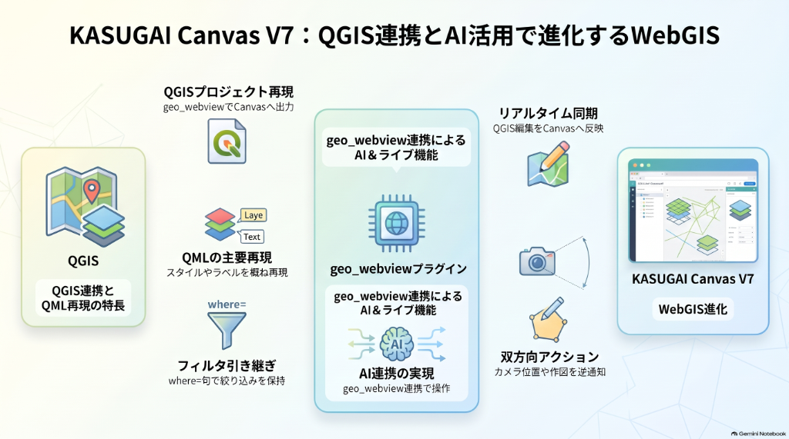

1. 📋 概要 — Canvas UI の説明
KASUGAI Canvas は、AI とマルチエンジンで拓く 2D/3D GIS です。CesiumJS + Three.js（メイン・3D）を核に、MapLibre / OpenLayers / Leaflet / GSI Maps の互換プレイヤーと試験的エンジン Navara が同じ .kasc プロジェクトを再生するマルチエンジン構成を採り、AI チャット（Gemini / OpenAI互換 の内蔵AI、GitHub Copilot・Devin・Antigravity のブリッジ連携）で地図を操作できます。Re:Earth GeoSuite と上位互換の GIS 基本機能に加え、KASUGAI 独自の FLY 機能を備えています。
画面は左パネルのタブ＋🧰ツールバーが操作の中心で、このドキュメントのナビゲーションも同じ分類（テーマ軸）で整理しています。各タブ・ツールの実装は「画面機能」、機能追加の履歴は「バージョン履歴」を参照してください。
| UI 領域 | 内容 |
|---|---|
| レイヤパネル | タブ：レイヤ・凡例・検索・属性・カメラ・表示・情報＋パネル下部のマルチエンジン切替 |
| ツール | 🧰ボタンで開くドック：計測・選択・集計・作図・標高断面・見通し判定・エクスポート・印刷・時系列 |
| ナビゲーション | 地図右上の操作群：コンパス・3D・オービット・表示履歴◀▶・矩形ズーム▭・地点座標⌖・現在地📍・フルスクリーン⛶ |
| ベースマップ | 地図左下のベースマップ選択＋別アプリで開く（CDN・アプリ・Google Earth） |
| AIチャット | 内蔵AI（【API】）または外部エージェント（【ブリッジ】）で地図を操作 |
| 管理 | ⚙ボタンで開く管理ウィンドウ：プロジェクト・AI・Google Maps・アプリ・その他 |
| プラグイン | PLUGIN/ に置いた拡張パネルがレイヤパネルのタブへ追加される |
v3.4.2 以降、地図タイル・検索・レイヤー取得はブラウザ側（CesiumJS 等）が直接行い、Rust サーバーは静的配信に加えてローカル環境限定の高権限 API（/api/files・/api/fetch・/api/plugins・/api/command・更新・シャットダウン等。提供可否は /api/capabilities で判定）を提供します。

2. 🌐💻 マルチエンジン — ブラウザ WebGIS とローカルアプリ
マルチエンジン構成（Cesium＋4互換プレイヤー＋試験的 Navara）の利用形態は2系統です。メインはインストール不要のブラウザ WebGIS（CDN エンジン × 外部ホストの .kasc を ?kasc= で再生）、フル機能が必要な場合はローカルアプリ（localhost:8510）を使います。エンジン一覧・配信構成図・?kasc= 仕様・実行時の供給元などの詳細は V6 概要 — マルチエンジン にまとめています。
導入・利用手順は ブラウザ WebGIS ガイド・ローカルアプリのガイド を参照してください。
3. 🗺️ QGIS連携 — プロジェクトをそのまま Web で再現
V7 のメインテーマです。QGIS プラグイン geo_webview がレイヤーツリー・スタイル（.qml）・表示状態・テーマ・ブックマークを .kasc + canvas_data/ へエクスポートし、ブラウザ WebGIS（?kasc=）またはローカルアプリでそのまま再生します。レイヤーフィルタ（subsetString）は where= として引き継がれ、同期系統は2系統あります。
| 連携面 | 内容 |
|---|---|
| Live 双方向同期 | live: 行入り .kasc で有効化。カメラ追従・QGIS 選択表示・QGIS 描画オーバーレイ・レイヤーのオンデマンド追加・表示/フィルタ/テーマの書き戻し（レイヤ一覧の QGIS Live パネル） |
| AI / MCP 操作 | 起動時に稼働中の QGIS Live Driver セッションを自動検出して MCP 接続し、qgis_pyeval・qgis_bridge_call でレイヤ制御・kasugaiExport・Processing 解析まで AI から実行（書き込み系は公開ゲート対象） |
詳細は V7 概要 — QGIS連携・QGIS連携（技術詳細・未対応 Issue） を参照してください。
4. 🤖 AI — API 直通とブリッジ経由
AI チャットはどちらの利用形態でも使えます。接続系統は2系統で、プロバイダ名の接頭辞【API】/【ブリッジ】がそのまま系統を示します。メインは公式 API へブラウザから直接繋ぐ内蔵AI、既存の AI 契約や自作エージェントを繋ぐ場合はブリッジ経由を使います。
| 【API】内蔵AI（メイン） | 【ブリッジ】外部エージェント | |
|---|---|---|
| プロバイダ | Gemini・OpenAI互換（GitHub Models・OpenAI・Azure OpenAI・Ollama 等） | GitHub Copilot・Devin（devin acp）・Antigravity・汎用 ACP プロバイダ（provider:"acp"、ACP 対応の任意エージェント CLI）・外部エージェント（汎用 /agent エンドポイント） |
| 接続経路 | ブラウザ → 公式 API へ直接（BYO キー）。Cloudflare/Cloud Run では /api/gemini キー隠蔽プロキシでキーレス利用も可 |
チャット → POST /agent → ブリッジハブ → 各 CLI（copilot / devin acp / agy / ACP 対応 CLI）。要各 CLI・本人認証（ACP はブラウザ認証または API キー） |
| 【WebGIS】ブラウザ WebGIS | ○（BYO キー / サーバーキー） | ○（同一 PC の bridge-hub :8511 を検出。CDN の download/bridge-hub.exe を実行すれば自己インストール。exe＋README の一式は download/bridge-hub.zip） |
| 【アプリ】ローカルアプリ | ○ | ○（インストール済みの bridge-hub :8511 を自動起動。ハブは CDN 配布版と同一の1本） |
| ツール実行方式 | function calling ループ — ツール結果を見て複数往復で判断（多段操作に強い） | 単発キュー — 応答の actions を一括実行 |
どちらの系統でもチャット UI・地図操作・runCode サンドボックス・MCP データソース（Box・QGIS 等）・AI プラグイン生成は共通です。ハブはアプリ版・ブラウザ WebGIS 共通の bridge-hub.exe 1本（127.0.0.1:8511）に集約しており、フロントは /health で検出して接続するため、CDN 経由のブラウザ WebGIS からもブリッジ系プロバイダが選べます。逆方向の「外部 → ブラウザを操る」はローカルアプリ本体 :8510 の /api/command 経路です。
設定手順は 【API】内蔵AI・【ブリッジ】外部エージェント連携（接続方式ごとの規約判断もこちら）、81ツール宣言（環境・エンジンで絞り込み）の引数・提供条件は AI ツール仕様 を参照してください。
5. 📚 ドキュメント
ドキュメントは左のナビゲーションと同じ「セクション→章→節」構成です。使い方は UI パネル別の操作説明（章1〜7）、技術資料は UI に対応しない技術系ドキュメント（章1〜2）で、各章ページはカード索引になっています。
使い方 — UI パネル別（章1〜7）
🖥️ 1. レイヤパネル・2. ツール
レイヤ・凡例・検索・属性・カメラ・表示・情報タブ、ツールドック、FLY・ポータル・マルチエンジン切替 — 画面機能のカード索引
🧭 3. ナビゲーション
地図右上の操作群 — コンパス・3D/オービット・表示履歴◀▶・矩形ズーム・地点座標・現在地・フルスクリーン
🗺️ 4. ベースマップ
地図左下のベースマップ選択＋別アプリで開く（CDN・アプリ・Google Earth）
🤖 5. AIチャット
【API】内蔵AI・【ブリッジ】外部エージェント・ツール仕様・ブリッジハブ・AI連携構成・解析（予定）のカード索引
⚙️ 6. 管理
管理ウィンドウの各カテゴリ — プロジェクト・インスペクター（.kasc）・AI・Google Maps・アプリのカード索引
🧩 7. プラグイン
PLUGIN/ 拡張パネル・認証方式・外部連携のカード索引
技術資料（章1〜2）
📦 1-1 QGIS連携
エクスポートの利用方法・連携方針・実装済み再現範囲のカード索引
🌐 1-2 配信・実行形態
ブラウザ WebGIS・永続キャッシュのカード索引
📝 1-3 設定・内部仕様
データ形式・描画性能・ライブラリ・システム構成・実装詳細・セキュリティのカード索引
🗺️ 2-1 バージョン履歴（機能カード索引）
V0〜V10 のテーマごとの機能追加履歴。GIS 基本機能・Fly プレゼン機能の一覧と、現行実装の仕組み・ドレープ・制限事項
記録（挑戦中）
| 期間 | イベント | 内容 |
|---|---|---|
| 2026/09〜12 | 🏅 イチBizアワード 2026 | 住まい候補地域の比較支援 提案書（不動産情報活用部門・応募締切 12/10） |
| 2026/11〜12 | 🌸 Zennfes Autumn 2026 さくらのAIチャレンジ祭り | さくらインターネットの投稿テーマ。徹底検証賞を目指す AI Engine 検証記事（締切 12/16） |
挑戦中のイベントのみ掲載しています。終了したイベントは終了したイベントの記録にまとめています。